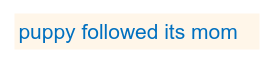
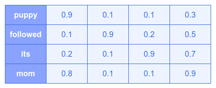
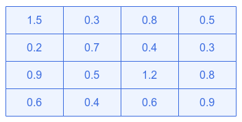
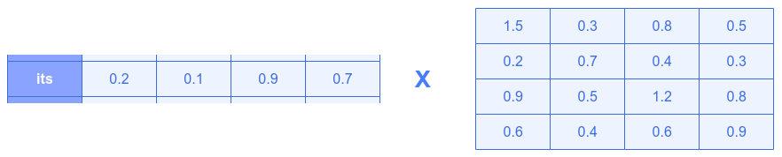
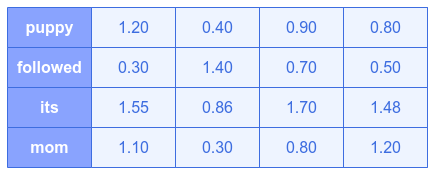
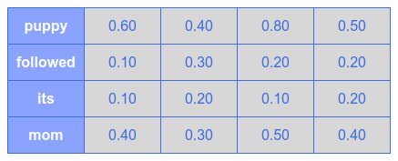
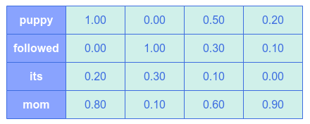

| PolarSPARC |
Transformer Attention Mechanism: Query, Key, and Value
| Bhaskar S | 06/19/2026 |
Introduction
In the article Deep Learning - Understanding the Transformer Models, we unpacked and explained the idea behind the Transformer model, which is the core building block behind the LLM models.
One of the core concepts in the Transformer models is the Attention mechanism, which uses three matrices - Query, Key, and Value to determine the attention scores.
In this article, we will further unpack the three matrices - Q, K, and V and how they are used in the attention score computation.
Inside the Transformer Attention Mechanism
In mathematical terms, the Attention is computed as follows:
$Attention(Q, K, V) = softmax(\Large{\frac{Q.K^T}{\sqrt{d_k}}})\normalsize{.V}$
To understand the concept of Attention using Q, K, and V matrices, let us consider the following simple sentence:

The word its in the above sentence has no meaning without a context. Does it refer to the word puppy ? Or Does ity refer to the word mom ?
Attention is the mechanism that lets every word (aka token) gather relevant information from every other word so that the word its can pick up context from the word puppy and help resolve this ambiguity.
Computers cannot process the words (aka tokens) directly. Each word must be converted to a list of numbers (aka embedding vector) that captures its general meaning.
In the real world Transformer models, the embedding vectors have dimensions between 512 to 4096. To keep things simple to understand the concept, we will use a dimension of 4 in this article.
We will choose arbitrary numbers between 0.1 to 0.9 and the following illustrates the embedding vectors for our words:

Notice that the words puppy and mom have embeddings that appear closer to each other (are similar) - both are nouns and both are animals.
The question we have at hand - what is the purpose of the three matrices - Q, K, and V.
The following analogy may help a bit:
Q (Query) : Want a book about dogs - what this word is looking for
K (Key) : Metadata on each book. (this book is about mammals) - what this word advertises to others
V (Value) : Actual book contents - what this word contributes when found
Based on the above analogy, in our example, for the word its:
Q (Query) : indicates 'am a pronoun' and need to find 'a noun to refer to'
K (Key) : indicates 'am a pronoun', which is not useful to others
V (Value) : indicates it contains the raw representation of the word
For the word puppy:
K (Key) : indicates 'am an animal noun'
So, why do we need the three matrices ???
Because what we are searching for about a word (query) is fundamentally different from what is advertised about the word (key) and what the word gives when found (value). A single matrix cannot capture all these three aspects at once.
Given we have three 'views' - Q, K, and V, we will also have the corresponding weight matrices (model parameters), which are learnt during model training. The corresponding weight matrices are - $W_Q$, $W_K$, and $W_V$ respectively.
In other words, we will transform the input word embeddings into three 'view' matrices - Q, K, and V.
Note that the three weight matrices - $W_Q$, $W_K$, and $W_V$ - start with random values and get adjusted during the model training.
The following illustration shows the weight matrix $W_Q$:

We need to compute the three matrices - Q, K, V using the embeddings for each of the words (aka tokens).
As an example, let us consider the embedding for the word its to demonstrate how the matrix Q is derived.
The following illustration shows the dot product $Q_{its}.W_Q$:

The following shows the mathematical computation of the embedding for the word its with each of the columns of the weight matrix $W_Q$ to find $Q_{its}$ - the projection of Q for the word its:
$Q_{its}[0] = (0.2 * 1.5) + (0.1 * 0.2) + (0.9 * 0.9) + (0.7 * 0.6) = 0.30 + 0.02 + 0.81 + 0.42 = 1.55$
$Q_{its}[1] = (0.2 * 0.3) + (0.1 * 0.7) + (0.9 * 0.5) + (0.7 * 0.4) = 0.06 + 0.07 + 0.45 + 0.28 = 0.86$
$Q_{its}[2] = (0.2 * 0.8) + (0.1 * 0.4) + (0.9 * 1.2) + (0.7 * 0.6) = 0.16 + 0.04 + 1.08 + 0.42 = 1.70$
$Q_{its}[3] = (0.2 * 0.5) + (0.1 * 0.3) + (0.9 * 0.8) + (0.7 * 0.9) = 0.10 + 0.03 + 0.72 + 0.63 = 1.48$
That is:
$Q_{its} = [1.55, 0.86, 1.70, 1.48]$
The same computation runs for all the words (aka tokens).
The following illustration shows the final view of the Q matrix:

Similar computations for the matrices K and V follow.
Assume the following illustration shows the final view of the K matrix:

Finally, assume the following illustration shows the final view of the V matrix:

Notice that the K vectors for the word puppy and the word mom are much larger - they are the noun words and mammals.
Attention Scores determine how close the Query (Q) matches each Key (K). In other words, it measures how relevant each word (aka token) is to the current word being processed.
Once again, we will consider the Query (Q) vector for the word its (represented as $Q_{its}$) to demonstrate how one can find the vector similarity in the Key (K) matrix.
We know,
$Q_{its} = [1.55, 0.86, 1.70, 1.48]$
The following shows the mathematical computation of the vector similarity between the vector $Q_{its}$ and each of the word vectors from the Key (K) matrix:
$Q_{its} . K_{puppy} = (1.55 * 0.60) + (0.86 * 0.40) + (1.70 * 0.80) + (1.48 * 0.50) = 0.9300 + 0.3440 + 1.3600 + 0.7400 = 3.3740$
$Q_{its} . K_{followed} = (1.55 * 0.10) + (0.86 * 0.30) + (1.70 * 0.20) + (1.48 * 0.20) = 0.1550 + 0.2580 + 0.3400 + 0.2960 = 1.0490$
$Q_{its} . K_{its} = (1.55 * 0.10) + (0.86 * 0.20) + (1.70 * 0.10) + (1.48 * 0.20) = 0.1550 + 0.1720 + 0.1700 + 0.2960 = 0.7930$
$Q_{its} . K_{mom} = (1.55 * 0.40) + (0.86 * 0.30) + (1.70 * 0.50) + (1.48 * 0.40) = 0.6200 + 0.2580 + 0.8500 + 0.5920 = 2.3200$
Arranging in highest score to the lowest, we get:
$Q_{its} . K_{puppy} = 3.374$
$Q_{its} . K_{mom} = 2.320$
$Q_{its} . K_{followed} = 1.049$
$Q_{its} . K_{its} = 0.793$
The same computation runs for all the words (aka tokens).
From the above attention scores, it is clear that the word its is paying more attention to the word puppy !
Note that in the above we only took the Query (Q) vector for the word its to perform computation. This has to be done for all the word vectors in the Query (Q) matrix.
This is what is indicated by the mathematical equation: $Q.K^T$.
For high dimension word vectors, final dot product value can grow large. Hence, the next step is to normalize (or scale) the dot product attention score number using the mathematical equation: $\Large{\frac{Q.K^T}{\sqrt{d_k}}}$, where $d_k$ is the dimension of the word vectors.
The normalized (or scaled) attention score numbers are just raw scores. To convert them into a probability distribution that sum up to $100%$, we use the mathematical equation: $softmax(\Large{\frac{Q.K^T}{\sqrt{d_k}}}\normalsize{)}$. These are called the Attention Weights.
The final step is to blend the attention weights into the Value (V) matrix containing the word vectors. For this, we use the mathematical equation: $softmax(\Large{\frac{Q.K^T}{\sqrt{d_k}}}\normalsize{)}.V$ !
Note that the same process runs in parallel for all words (aka tokens) simultaneously. Each word is computing its own row of attention scores against all Keys (K), building its own blended output.
References